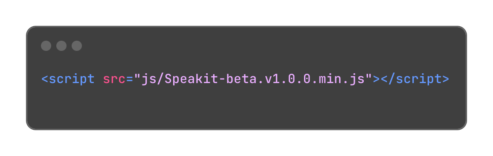
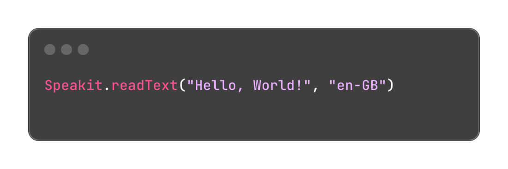

How does it works?
First of all add the reference to the Speakit-JS library in your HTML document.
We always recommend the Minified version of its library but, of course, you can use the unminified version in a Development Stage. Both of them are available in our Github Repo.
Reading a text
In the JavaScript logic file of your webapp, add the following line of code.
Speakit is the JavaScript Object wich is built the native JS API and it offers a couple of methods. The most important method is .readText() which waits for at least two parameters:
- The text or sentence to read.
- The ISO language code related to the text.
With only two parameters you are ready to listen to a text or sentence in the specificed language.